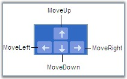

Nudge commands allow you to move the selected objects on the page by 1 pixel. This can be done in two ways:
Using Nudge Commands
NudgeUp
Moves the selected object to the top by 1 pixel.
|
[C#]
DiagramCommandManager.NudgeUp.Execute(diagramView.Page, diagramView); |
|
[VB]
DiagramCommandManager.NudgeUp.Execute(diagramView.Page, diagramView) |
NudgeDown
Moves the selected object to the bottom by 1 pixel.
|
[C#]
DiagramCommandManager.NudgeDown.Execute(diagramView.Page, diagramView); |
|
[VB]
DiagramCommandManager.NudgeDown.Execute(diagramView.Page, diagramView) |
NudgeLeft
Moves the selected object to the left by 1 pixel.
|
[C#]
DiagramCommandManager.NudgeLeft.Execute(diagramView.Page, diagramView); |
|
[VB]
DiagramCommandManager.NudgeLeft.Execute(diagramView.Page, diagramView) |
NudgeRight
Moves the selected object to the right by 1 pixel.
|
[C#]
DiagramCommandManager.NudgeRight.Execute(diagramView.Page, diagramView); |
|
[VB]
DiagramCommandManager.NudgeRight.Execute(diagramView.Page, diagramView) |
Nudge by using Arrow Keys
The corresponding arrow keys can be used to move the selected objects to top, bottom, left or right.

Figure 149: Nudge by using Arrow Keys
Nudge commands are particularly useful for accurate placement of objects on the page as it allows you to move by 1 pixel each time.